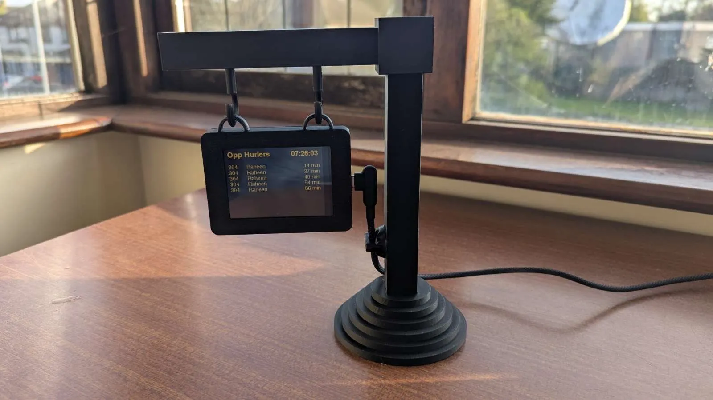

DeskStop
DeskStop is a desk-sized live bus tracker, built around an ESP32 microcontroller and a touchscreen display, housed in a 3D-printed bus stop casing. The project was set as an individual assignment for a 3D Modelling and Digital Fabrication module, in which I was tasked with designing, modelling, and documenting a prototype device that integrated a touchscreen and an ESP32 board.
Hardware
ESP32, Touchscreen
Fabrication
3D Printing (PLA)
Software
FreeCAD, Bambu Studio
Assignment
Individual Project
Interactive 3D Model of the DeskStop
Design Context and Problem
The brief required a functional prototype that used an ESP32 and touchscreen in a thoughtfully designed casing. I wanted to create something genuinely useful for everyday life rather than a purely demonstrative device.
Waiting for buses without being able to check live arrivals is a common frustration, particularly for people without a smartphone to hand or who prefer a dedicated, always-on display. This led to the concept of a minimal desk object that passively shows live bus information for a chosen stop, styled to echo the aesthetic of a real bus stop sign.
Responsibilities
This was an individual project involving all aspects of the work from initial concept to finished prototype, including the hardware integration, FreeCAD modelling, 3D printing, post-processing, and technical documentation. The concept, design decisions, and iterative problem-solving throughout were entirely my own.
Prototyping
The prototyping process began with low-fidelity cardboard models to test the design and functionality before moving to 3D modelling. The first cardboard prototype proved functional, guiding the subsequent iterative designs.
Through cardboard prototyping, key design challenges were identified and addressed. An early prototype revealed that the cable port for the ESP32 was positioned incorrectly, leading to a cluttered appearance. This was rectified in later iterations. Initial tests also confirmed that the touchscreen made one side of the bus stop sign too heavy for the base to stand upright, prompting the inclusion of inserts for craft weights in the 3D design to ensure stability. The loop system for attaching the case to the pole also underwent revision after encountering difficulties in its FreeCAD implementation.


3D Modelling & Printing
The device was designed in FreeCAD, emphasising modularity and ease of assembly. The main components, including the pole base, vertical pole, horizontal pole, case box, and case lid, were modelled with precision. Iterations during the 3D modelling phase included adjusting the base design from seven stacked circles for aesthetic reasons, reducing the vertical pole's height from 21 cm to 17.5 cm due to printer bed limitations, and correcting the orientation of the connecting hooks. Technical drawings were produced for each part to ensure precise manufacturing and can be viewed at the beginning of this page.
The parts were 3D printed using a Bambu Lab A1 Mini printer with PLA Mage Charcoal filament for the final version, and Sunlu PLA Plus filament in Blue Grey for prototyping. Early prints of the base and poles revealed minor errors, such as hole sizes for connections, which were subsequently corrected in the models. After printing, careful post-processing was required, including removing brims and supports. Craft weights were glued into the base to provide stability, addressing a key finding from the cardboard prototyping phase. The remaining components were designed to snap together, allowing for easy assembly without additional adhesive.

Final Prototype & Assembly
The final prototype successfully achieves the initial design goals, being minimal, aesthetically pleasing, and functional. It occupies minimal desk space while offering clear readability and usability of the live bus information. The assembly process proved straightforward due to the thoughtful design of the interlocking parts and the inclusion of features like magnet enclosures and internal guides for the touchscreen.

Reflection
This project strengthened my ability to move between digital modelling and physical fabrication, reinforcing the importance of treating these stages as an iterative cycle rather than a linear progression. The cardboard prototyping phase proved more critical than initially anticipated, as it allowed for the early identification of design flaws that would have otherwise resulted in substantial material waste during the printing process.
Experience with FreeCAD highlighted the necessity of accounting for real-world tolerances, acknowledging that on-screen dimensions often require adjustment to translate accurately into a physical print. Future developments for DeskStop would focus on integrating a wireless charging solution to achieve a cleaner, cable-free aesthetic and refining the ESP32's connectivity to ensure reliable performance in environments with degraded Wi-Fi signals.